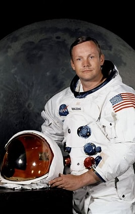
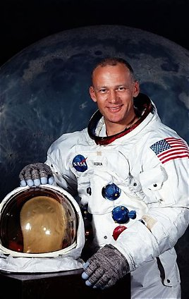
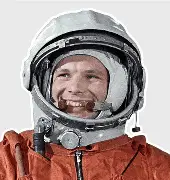
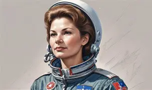
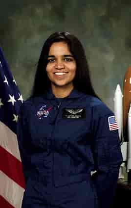
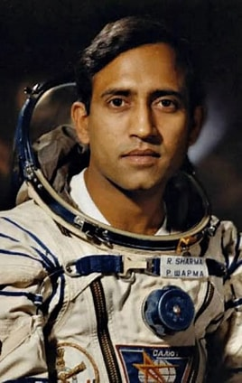
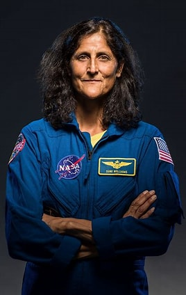

Introduction
Astronauts are trained professionals who travel into space to conduct scientific research, operate spacecraft, and explore new worlds. Their missions have expanded our knowledge of the universe.
Famous Astronauts
| Astronaut | Country | Famous For | Mission |
|---|---|---|---|
| Neil Armstrong | USA | First person to walk on the Moon | Apollo 11 |
| Buzz Aldrin | USA | Second person on the Moon | Apollo 11 |
| Michael Collins | USA | Piloted the Command Module | Apollo 11 |
| Yuri Gagarin | Russia | First human in space | Vostok 1 |
| Valentina Tereshkova | Russia | First woman in space | Vostok 6 |
| Kalpana Chawla | India / USA | First woman of Indian origin in space | STS-87, STS-107 |
| Rakesh Sharma | India | First Indian in space | Soyuz T-11 |
| Sunita Williams | USA | Long-duration space missions | Expedition 14, 15, 32, 33 |
Neil Armstrong

Neil Armstrong became the first human to walk on the Moon on 20 July 1969 during the Apollo 11 mission.
- Nationality: American
- Mission: Apollo 11
- Achievement: First person on the Moon
Buzz Aldrin

Buzz Aldrin was the second astronaut to walk on the Moon. He spent over 21 hours on the lunar surface during Apollo 11.
- Nationality: American
- Mission: Apollo 11
- Achievement: Second Moonwalker
Yuri Gagarin

Yuri Gagarin became the first human to travel into space on 12 April 1961 aboard Vostok 1.
- Nationality: Russian
- Mission: Vostok 1
- Achievement: First human in space
Valentina Tereshkova

Valentina Tereshkova became the first woman in space during the Vostok 6 mission in 1963.
- Nationality: Russian
- Mission: Vostok 6
- Achievement: First woman in space
Kalpana Chawla

Kalpana Chawla was the first woman of Indian origin to travel into space. She flew on two Space Shuttle missions.
- Born in India
- NASA Astronaut
- Inspired millions of students
Rakesh Sharma

Rakesh Sharma became the first Indian citizen in space in 1984 aboard the Soyuz T-11 spacecraft.
- Nationality: Indian
- Mission: Soyuz T-11
- Achievement: First Indian in space
Sunita Williams

Sunita Williams has completed multiple long-duration missions aboard the International Space Station and has performed several spacewalks.
- NASA Astronaut
- Multiple ISS Missions
- Experienced Spacewalker
Interesting Facts
- Neil Armstrong was the first person on the Moon.
- Buzz Aldrin was the second Moonwalker.
- Yuri Gagarin was the first human in space.
- Valentina Tereshkova was the first woman in space.
- Rakesh Sharma was the first Indian in space.
- Kalpana Chawla inspired millions through her achievements.
- Sunita Williams has spent hundreds of days in space.
- Astronauts train for years before flying into space.